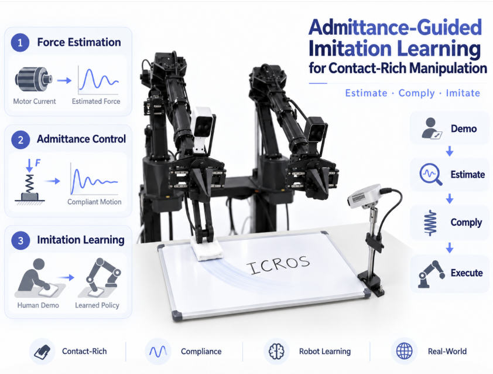
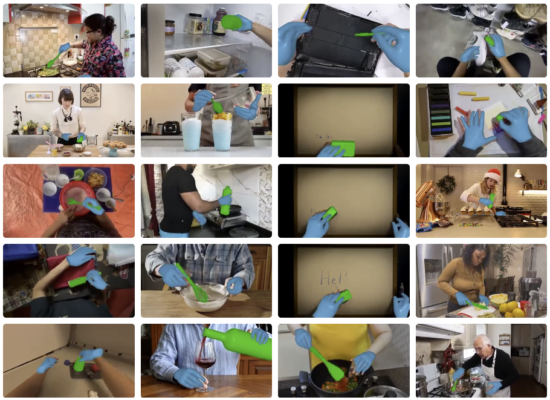
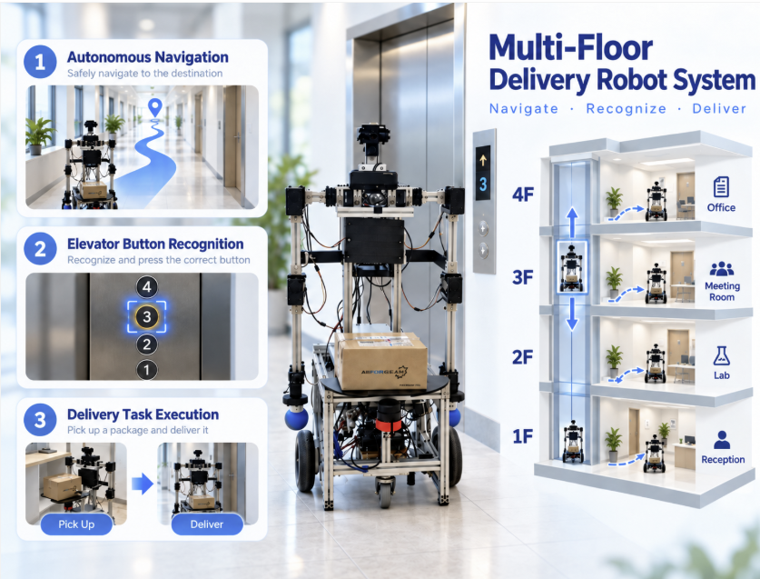
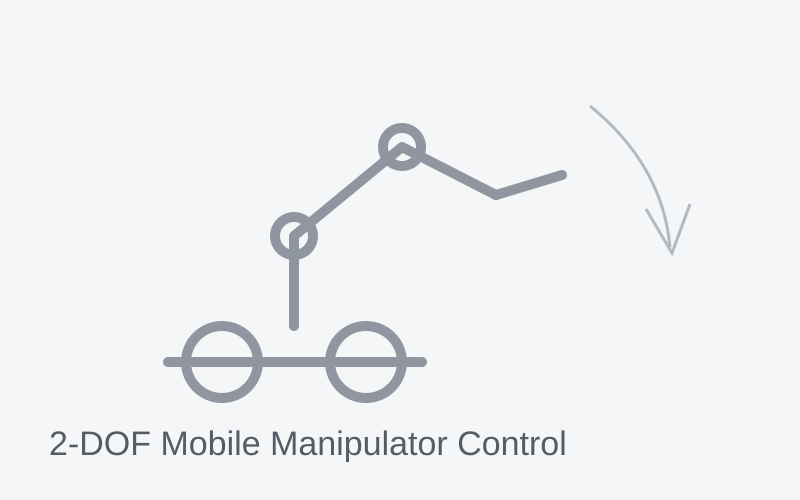
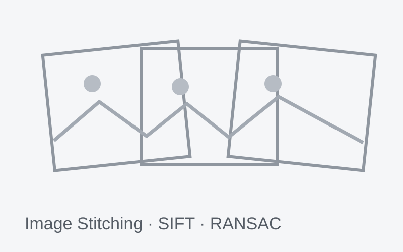

Robot Learning
How can robots learn useful behaviors from diverse data?
Imitation learning, reinforcement learning, behavior data generation, and policy learning.
Undergraduate Researcher @ GIST
I am currently working on generating robot behavior data from web videos at GIST AI Lab. My research focus on building robotic agents that can understand and interact with the physical world. I am particularly interested in world foundation models that capture contact, object articulation, and interaction dynamics. Toward this goal, I am interested in world foundation models, cross-embodiment learning, and sim-to-real transfer for generalizable robot interaction.
My work focuses on connecting learning algorithms with physical interaction, simulation, perception, and real-world robot control.
I am interested in learning-based robotics that connects human demonstrations, physical interaction, and reliable robot execution.
How can robots learn useful behaviors from diverse data?
Imitation learning, reinforcement learning, behavior data generation, and policy learning.
How can robots interact compliantly and reliably with the physical world?
Admittance control, contact-aware manipulation, force estimation, and trajectory optimization.
How can perception and action be integrated into a complete robot system?
Vision-based robotics, retargeting, autonomous navigation, simulation, and sim-to-real deployment.
Selected milestones from my research and project work.
Working at GIST AI Lab on web video-based robot behavior data generation.
Presented Admittance-Guided Imitation Learning for Contact-Rich Manipulation at ICROS 2026.
Completed the undergraduate thesis “Multi-Floor Delivery Robot Platform Utilizing Imitation Learning”.
Received the High-Tech Robot Industry Director’s Award for the multi-floor delivery robot project.
Received the Department Chair’s Award for an imitation-learning-based robotic sequence demonstration.
My portfolio is centered on hands-on research and system implementation, from learning algorithms and contact-aware manipulation to perception and real robot control.

Developed an admittance-guided imitation learning framework for contact-rich tasks such as wiping. The system estimates external force from motor currents without a force/torque sensor and uses admittance control to generate compliant motion during data collection and policy execution.

Researching a pipeline that converts web videos into robot behavior data for manipulation. Current work explores contact-aware hand-object reconstruction, heatmap-guided contact optimization, and retargeting to bridge human demonstrations and robot execution.

Built a robotic platform combining ROS2 Nav2 autonomous navigation, dual-arm kinematics, YOLOv5-based elevator-button recognition, and cubic trajectory generation for precise arm motion. The project served as the basis of my undergraduate thesis.

Modeled robot dynamics in MATLAB Simulink, implemented model-based PID control, and generated smooth reference trajectories using the LSPB algorithm.

Implemented SIFT, descriptor matching, RANSAC-based homography estimation, perspective warping, and panoramic image composition.
Research papers and academic outputs related to my undergraduate work.
Undergraduate Researcher · Advisor: Prof. Kyoobin Lee
Working on web video-based robot behavior data generation, with a focus on contact-aware hand-object interaction, retargeting, and robot manipulation.
Undergraduate Research Student · Advisor: Prof. Jinseong Park · Daejeon, South Korea
Studied Vision-Language-Action models and robot-control algorithms using Pinocchio, ROS2, impedance control, and admittance control.
Intern · Daejeon, South Korea
Developed robotic mechanisms for underground water-supply maintenance and designed mechanical components using Autodesk Fusion 360.
2019 – 2026
Mechatronics Engineering
GPA 4.04 / 4.5 · Major GPA 4.06 / 4.5
2025.08 High-Tech Robot Industry Director’s Award
2025.08 Department Chair’s Award
2022.08 Excellence Award (Silver Prize), MAZE Line Tracer Competition